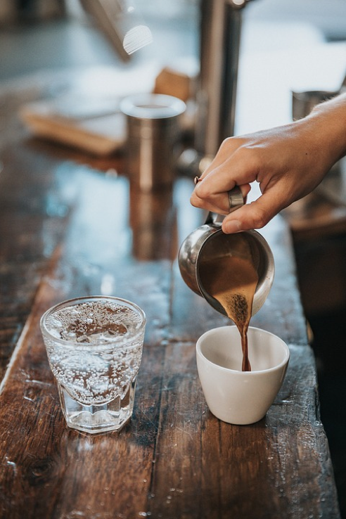

Are you confused by conflicting advice about staying hydrated? I’d be shocked if you weren’t. Hydration experts have been debating for 80+ years about questions like, “How much fluid should someone drink? And what’s the best way to measure someone’s hydration?” The biggest debate, which has hydration researchers splitting up into dueling camps, is whether or not dehydration matters during exercise. And if it does matter, when and why?
Okay… so if the most prominent researchers still haven’t definitively answered these questions, where does that leave you? Better off than you might think, because you have me; and I’ve scoured the published literature to dispel the 5 biggest hydration myths.
Caffeine Dehydrates You
Actually, when comparing people who consume several cups of coffee or tea daily with people who drink the same amount of water, they had similar hydration levels (1). More specifically, caffeine only appears to have a diuretic effect when drinking an excess of 300 mg per day (this would equate to >3 cups of coffee or >6 cups of tea)!
Water is the best drink to hydrate your body.
Although water is a fantastic option when you’re thirsty (it does have zero calories!), studies have shown that as long as people drink the same amount of fluids throughout the day, the type of beverages they drink - whether sweetened and/or caffeinated - doesn’t change their hydration status (2,3). Drinks with electrolytes are also a good option and can help you rehydrate faster (8), however, these are usually laden with sugars. That being said, for every day exercisers, water is your healthiest option since it has no sugars, artificial sweeteners, or calories!

It’s important to drink fluids during exercise- even when you’re not thirsty.
Research indicates that if you simply drink whenever you’re thirsty during exercise, you will replace enough of the water that you lose through sweat. Even if you become slightly dehydrated, it won’t keep you from crushing that workout (4). The caveat to this claim is if you’re working out in a hot environment where you’re sweating a lot, and/or exercising for 1+ hours. If that’s the case, you should aim to drink about 0.04 ounces per pound of bodyweight every 30 minutes. For a 150 pound person, this would mean drinking ~6 ounces (or ~⅓ of a commercial water bottle) every 30 min.
Dehydration won’t impact your workout that much.
False! Whether you start the workout dehydrated or become dehydrated during exercise, if you cross the dehydration “threshold” (a 2% decrease in body weight), your exercise intensity drops off. For a 150 lb. person, this would only be a 3 lb. loss. Although this might be how much your weight changes fluctuates in one day, it would take over an hour of exercise to reach this 2% body weight loss (since the average person loses ~2 pounds of sweat per hour). However once you reach this dehydration threshold, 1) you will sweat less, which will lead to a higher body temperature, and 2) your heart rate will be higher for the same exercise intensity. This means your normal exercise routine will feel harder, and in turn, you’re likely to slow down. This effect goes for both cardio (5) and strength-based activities (6).
You should drink 8 oz. of water, 8 times per day.
Researchers don’t even know how this “rule” started. Apparently some guy just woke up one day and decided we all should drink 64 oz. of water – and man, did he market that rule well! It might be that he found this amount of water (~1.8 L/day) worked for him. Yet, there’s still no expert agreement on how much fluid we should drink everyday. In fact, recent research shows that people have different limits for when they feel thirsty. But what’s really interesting about the findings is that the people who weren’t as thirsty and drank less fluids, were still just as hydrated as the people who drank more water (7). What this means: hydration is not one-size fits all. If you listen to your body and drink throughout the day when you’re thirsty, you’re likely to stay hydrated. But for more information on how to more accurately assess whether you’re hydrated, see this follow-up post!
So grab your water bottle and hit the gym!
References
Maughan, Ron J., and J. Griffin. "Caffeine ingestion and fluid balance: a review." Journal of human nutrition and dietetics 16.6 (2003): 411-420.
Grandjean, Ann C., et al. "The effect of caffeinated, non-caffeinated, caloric and non-caloric beverages on hydration." Journal of the American College of Nutrition 19.5 (2000): 591-600.
Tucker, Matthew A., et al. "Hydration Status over 24-H Is Not Affected by Ingested Beverage Composition." Journal of the American College of Nutrition 34.4 (2015): 318-327.
Noakes, Timothy David. "Is drinking to thirst optimum?." Annals of Nutrition and Metabolism 57.Suppl. 2 (2011): 9-17.
Casa, Douglas J., et al. "Influence of hydration on physiological function and performance during trail running in the heat." Journal of athletic training 45.2 (2010): 147-156.
Judelson, Daniel A., et al. "Effect of hydration state on strength, power, and resistance exercise performance." Medicine and science in sports and exercise 39.10 (2007): 1817.
Johnson, Evan C., et al. "Hormonal and Thirst Modulated Maintenance of Fluid Balance in Young Women with Different Levels of Habitual Fluid Consumption." Nutrients 8.5 (2016): 302.
Shirreffs, Susan Margaret, et al. "Post-exercise rehydration in man: effects of volume consumed and drink sodium content." Medicine and Science in Sports and Exercise 28.10 (1996): 1260-1271.